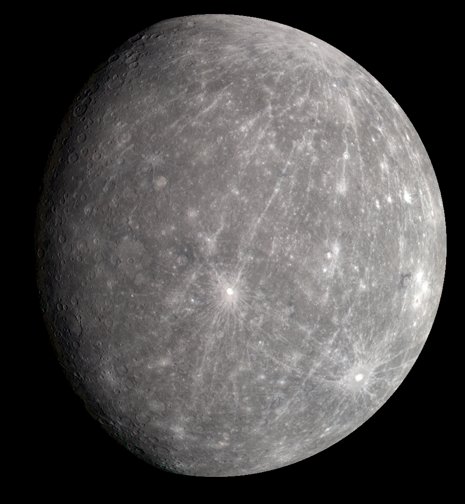
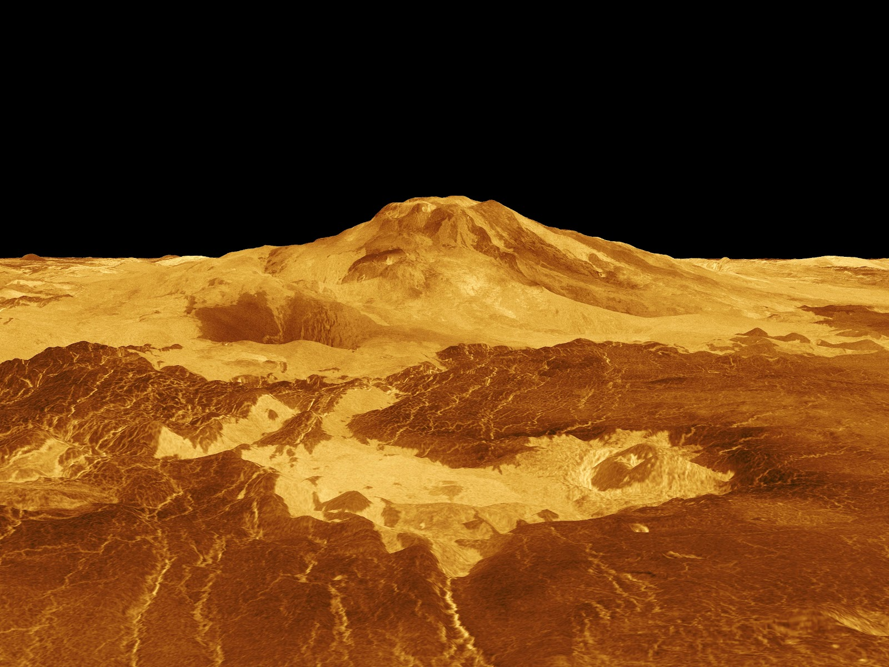
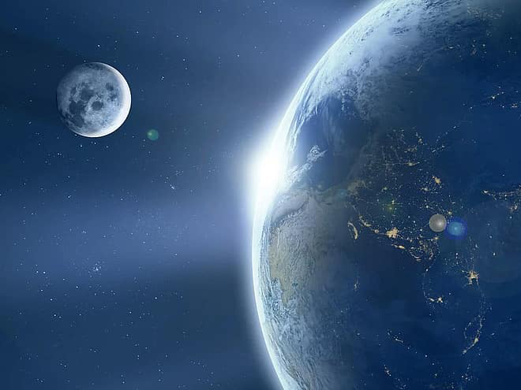
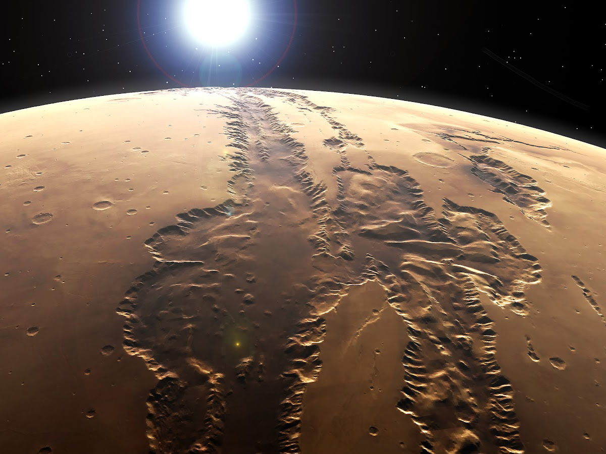
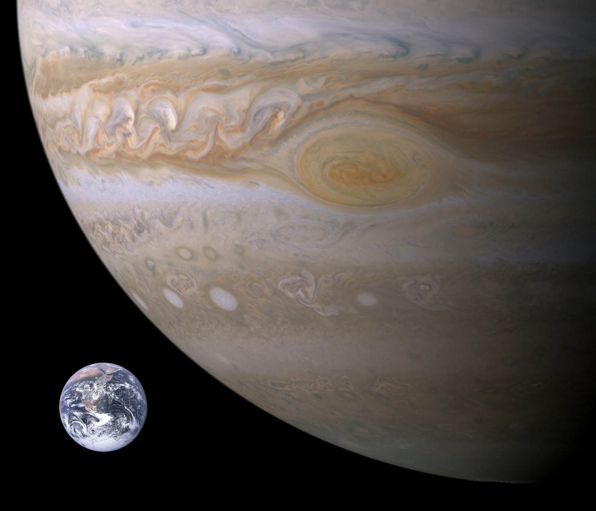
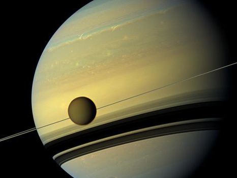
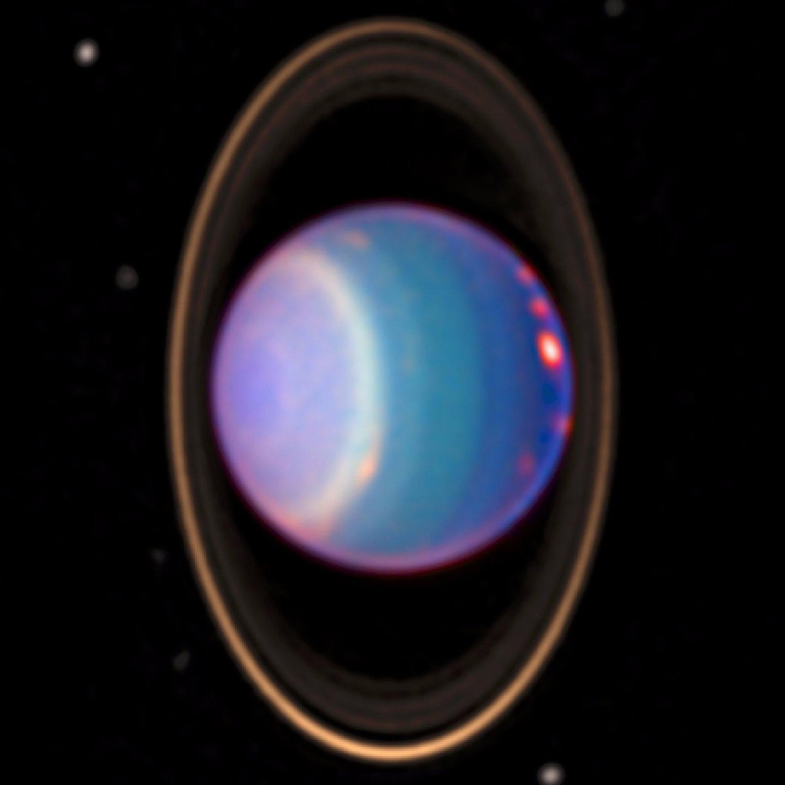
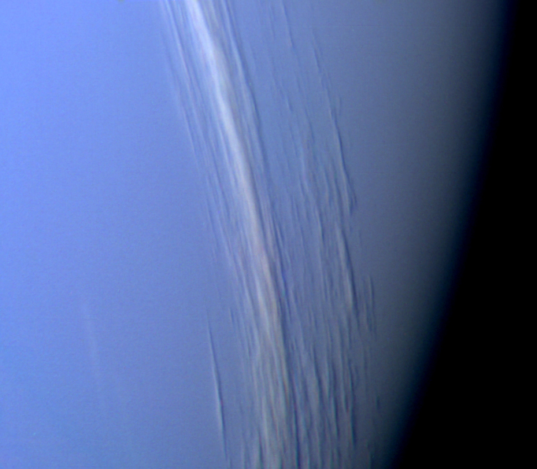

MERCURY
 Mercury, being the innermost planet, whizzes around the Sun once every 88 days. However, it takes 58 days and 15 hours to rotate once upon its axis. In other words, its day lasts 2/3 the length of its year and there are two days for every three years. While this might seem strange, when you couple it with the fact that Mercury has an elliptical orbit (the most of any planet) then it has a very curious effect.
If you could stand on the surface, you would see the Sun rise in the east and move across the sky as normal. Then, about two months later, it would reverse direction and move a short distance back toward the zenith overhead. Nearly two weeks later still, it would continue its journey westward before setting about three months after its journey began. You will then have to wait another three months to see the Sun again! Depending on your location on the surface, it is entirely possible you could see the Sun rise, then drop below the horizon before rising again - all within the same Mercurian day.
VENUS
 You might think that Mercury, being the closest planet to the Sun, has the hottest surface. But while it can almost reach a sweltering 800℉ (427℃) in the sunlight (or a chilly -315℉ (-193℃) in the shade) it does not quite beat its neighbor. With a mean temperature of 867℉ (464℃), Venus has the hottest surface of any of the planets and it is all thanks to the greenhouse effect.
Venus is completely covered in clouds, making it impossible to see its surface from the Earth. These clouds trap the heat from the Sun and cause the surface temperature to rise, with the result that although midday will look like a gloomy, overcast winter is day, it will feel hotter than any desert you will ever experience on Earth. This, of course, is assuming you are able to stand, as the atmospheric pressure (another effect of the dense cloud) is 93 times that of the Earth's!
EARTH AND MOON
 The Earth is the largest of the inner worlds (the first four planets from the Sun) and has a mean diameter of 7,918 miles (12,742 km). In comparison, the Moon has a mean diameter of 2,158 miles (3,474 km), which means the Moon is 27% the size of the Earth. This might not seem like much, but it is the largest Planet to Moon size ratio in the solar system. This has caused some to call the pair a “double planet.”
While there is no formal definition of a double planet, many would define it as being two worlds that orbit one another around a common center of gravity, called a barycenter, but that this center of gravity should lie in the space between the two worlds. Unfortunately, that's not the case here, as the barycenter is located below the Earth's surface. In other words, the Moon orbits the Earth, rather than both worlds orbiting one another. Are the Earth and Moon actually a double planet? Officially, no, but definitions are subjective and prone to change - as Pluto can attest to!
MARS
 Mars, of course, is not the largest planet in the solar system. It's not even the largest of the inner planets (that honor belongs to the Earth) - but the planet is not without its potential tourist attractions. One of these is Valles Marineris, a canyon measuring roughly 2,500 miles (4,000 kilometers) in length and possibly the largest canyon in the solar system. In fact, it's not just one canyon, but an entire system of interconnected canyons that stretches nearly a quarter of the way around the planet's circumference.
To put this into perspective, if the Valles Marineris were on Earth, it would stretch across the continental United States from New York to Los Angeles. It cuts four miles (6.4 kilometers) deep into the surface of Mars with a wound that's 125 miles (201 kilometers) wide in some places, potentially providing a lifetime of adventure for any future Martian explorers.
JUPITER
 You're no doubt aware that Jupiter is the largest planet in the solar system, but you might not be aware of how large it actually is. For example, if you were to take all the other planets and roll them together into a single, giant ball, it still wouldn't be larger than Jupiter. As if that wasn't enough, the famous Great Red Spot, a planet-sized hurricane that's been tearing through Jupiter's atmosphere for at least 350 years, is large enough to swallow the Earth whole.
Jupiter also has a huge collection of 79 known moons, with the four largest ranking among the top 10 list of the largest moons in the solar system. Three of them - Io, Ganymede, and Callisto - are larger than our own moon, while the fourth, Europa, is only 10% smaller. Ganymede, the largest of the four, is also the largest moon in the solar system and is even larger than the planet Mercury. Little wonder then, that Jupiter goes by the nickname of “the king of the planets”.
SATURN
 Jupiter may have nearly 80 moons, but Saturn has that beat with 83. While many of these are tiny (the smallest being 0.2 miles (0.3 kilometers) in diameter), Saturn also has more than its fair share of larger moons too. In fact, out of the top 20 largest moons in the solar system, Saturn has six of them - more than any other planet.
Its largest moon, Titan, is not only the second-largest in the solar system, but is also the only moon to have both a thick atmosphere and large bodies of liquid on its surface. Unfortunately, this is no far-flung paradise, as the atmosphere is unbreathable, the lakes are methane and the temperature is a very chilly -300℉ (-180℃)! However, it's thought that the moon might warm up in the future - if you don't mind waiting about five billion years.
URANUS
 Uranus, the third-largest planet in the solar system and the seventh from the Sun, was the first planet to be discovered by using a telescope. The amateur astronomer William Herschel spotted it on March 13th, 1781, but initially thought it was a comet. (The planet had been sighted many times in the preceding years but had always been mistaken for a star.) The first moons were discovered later that decade, and it soon became obvious that something was off: their orbits formed circles like a target about the planet when seen from the Earth.
Uranus is actually tilted over by 97 degrees, thereby causing the planet to roll around the Sun on its side. It's thought the planet was struck by an Earth-sized world some 3-4 billion years ago, tipping the planet over. As a result, during the course of its 84-year orbit, each hemisphere spends about 42 years in darkness and then another 42 years in sunlight.
NEPTUNE
 Neptune, the furthest planet from the Sun, only receives about 0.1% of the sunlight we do. Since sunlight drives weather, scientists were expecting to encounter a bland planet when the Voyager 2 space probe visited the world in 1989, just as they had at Uranus, three years earlier. However, what they found was a dynamic atmosphere of ever-changing storms, a Great Dark Spot that resembled Jupiter's Great Red Spot, and wind speeds measuring over 1,100 miles 1,770 kilometers per hour.
So what drives the weather on Neptune? The cause is potentially twofold: firstly, the planet generates 2.6x the energy it receives from the Sun. Secondly, it's thought the cold temperatures on the planet actually help to reduce friction in the atmosphere, thereby allowing the winds to travel faster. Whatever the cause, there's no denying you'll be blown away by Neptune!